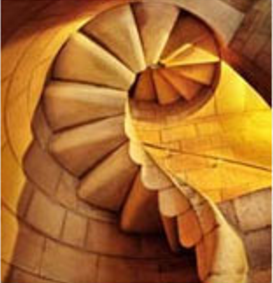
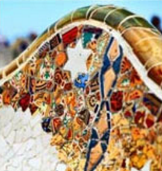
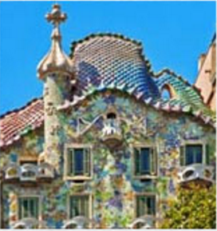
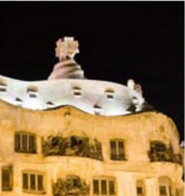

Antonio Gaudi
The voices of Barcelona blur in a mix of Spanish and Catalan in much the way Gaudi's work blurs the lines
between architecture and artwork
From the tiled benches in Guell Park to the towers over Casa Mila and Casa Battlo, I fell in love with
Goudi's work on my firs trip to Barcelona.

Park Guell
The benches as Lizard fountain in Park Guell make up part of the UNESCO World Heritage Site known as, "The
Works of Antonio Gaudi."
The park features Gaudi's famous Lizad Fountain, as well as benches and other extraordinary examples of
Gaudi's talent with tiles.

Casa Batllo
The firs time I strolled down the Passeig de Gracia (Catalan of the Promenade of Grace), I stopped in my
rtacks in front of Gausi's Casa Batllo.
The 'house,' wedged between two 'normal' buildings, look more like a gian sculpture then any house I'd ever
seen anywhere else.

Cass Mila
A pupular attraction in Barcelona, Cassa Mila, also known as La Pedrera, is arguably one of the most famous
buildings designed by Gaudi.
The roof features a collection of chimneys adn towers that like thiy'd fit right in as characters in a
Dr. Suess book.
